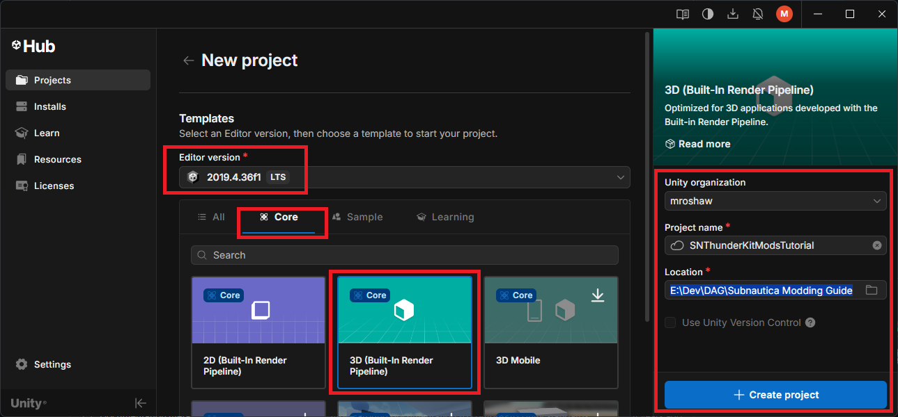
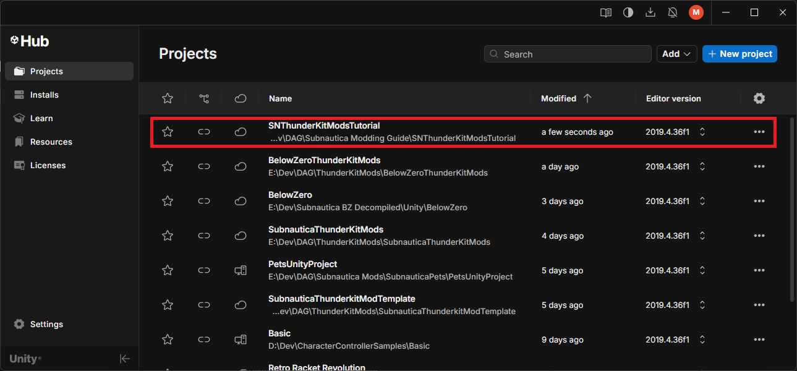
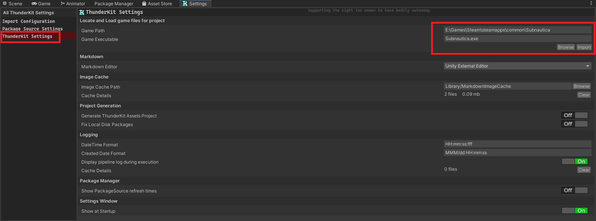
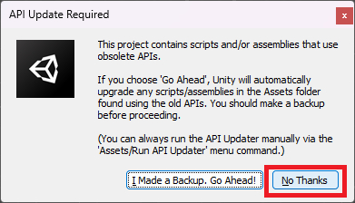

Installation and Set-up
There's quite a bit to do here, so I advise taking your time and going through each step slowly.
Install Unity Editor 2019.4.36f1
It's important that the version of Unity EXACTLY matches the version used to build the game. For us, that is Unity 2019.4.36f1, and that applies to both Subnautica and Below Zero. Luckily, you can still download this rather ancient version of the editor direct from Unity.
-
From this link, download and install Unity Hub. This is where you'll manage Unity Editor installs and create and manage your projects.
-
Once Unity Hub is installed, click this link to get to the Unity download archives.
- Click the "2019" filter and find the entry for 2019.4.36f1.
- Click the "Install" button next to that entry.
- If prompted, allow Unity Hub to open the link.
- Follow the prompts to install the Unity Editor.
You'll now have Unity 2019.4.36f1 installed and ready on your machine.
Create a new ThunderKit Project
Once the Unity Editor is installed, you can create a new project. This project can be the basis for all of your mods for this particular game, so you don't need to do this for every new mod you create. What you should do is have separate projects for Subnautica and for Below Zero, if you plan on making mods for both games.
- In Unity Hub, click the "New Project" button.
- In the "Editor Version" drop down, select "2019.4.36f1 LTS".
- Now click "Core" and select the "3D (Built-In Render Pipeline)" template.
-
Give your project a name, for example "My Subnautica ThunderKit Mods", pick the location for where it will be saved, then click "Create project":

-
You can now open your new project direct from Unity Hub by clicking it in the list:

Install ThunderKit
Unity will open your new project once created, or you can open it through Unity Hub. Having opening your new project, you should be in the Unity Editor.
- Select the "Window > Package manager" menu item to open package manager.
- In the top left of this window is a little "+" icon with a drop down. Select that and pick "Add package from git URL"
- Paste in this URL and hit return:
https://github.com/PassivePicasso/ThunderKit.git#9.1.3 - Unity will install the ThunderKit package, and this will likely generate a bunch of errors and warnings in the console. You can ignore these, and clear the console once installation is done. If all is well, the ThunkerKit "Settings" window should be displayed.
[!TIP]
Check for the latest release in the ThunderKit GitHub repository, and use that reference version when installing the package - simply replace the number after the # character in the URL. As it happens, 9.1.3 was the latest release at the time of writing this guide.
Import the Subnautica game files
We now import the game files into our project.
- In the "Settings" window, click "ThunderKit Settings" and click the "Browse" button to locate the game files. In the screenshot below, I have Subnautica installed via Steam on my E: drive. Note that the same process applies for Below Zero:

- Now click the "Import" button and follow the on screen instructions.
- Once done, you should be back in the Unity Editor (having restarted it a couple of times), and again you'll see a load of errors and warnings that can be ignored.
Configure ThunderKit for Subnautica / Below Zero
We'll need some additional files and bits and pieces for our mods.
Install the Bep In Ex pack
- Click the "Tools > ThunderKit > Packages" menu to open the ThunderKit package manager.
- Expand the "Extensions" drop down on the left, and select the "Bep In Ex Pack" entry.
- Click the little "Install" button in the top right.
- This will install the BepInEx DLLs necessary to patch our game.
There's a conflict between two Harmony DLLs installed by this pack, that will prevent our mod from compiling. We can get around that by following these steps:
- In Unity, in the "Project" window, expand "Packages > BepInExPack > BepInEx > core".
- Right click any file and select the "Show in Explorer" menu item.
- In Explorer, delete these two files:
- 0Harmony20.dll
- 0Harmony20.dll.meta
Install the Nautilus DLL
Nautilus is a great tool that provides loads of useful components and classes for creating Subnautica mods. Installing this in your project will let you access its features from within your mod code.
-
Download the latest version of Nautilus from Nexus Mods.
-
Click the "Manual Download" button and save the ZIP to your local machine.
-
Unzip Nautilus to a folder.
-
Back in your Unity project, create a folder in the "Assets" root called something like "ThirdPartyAssets"
-
Right click this and select the "Show in Explorer" menu item.
-
Now copy the Nautilus DLL that you extracted into that folder you've just created.
-
Go back into your Unity project. If you're prompted to update the API scripts, click "No thanks":

You've now got everything that we need to start creating a new mod in the ThunderKit framework.